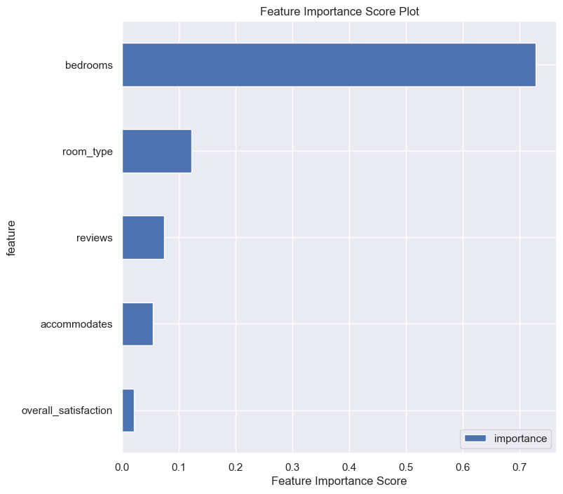
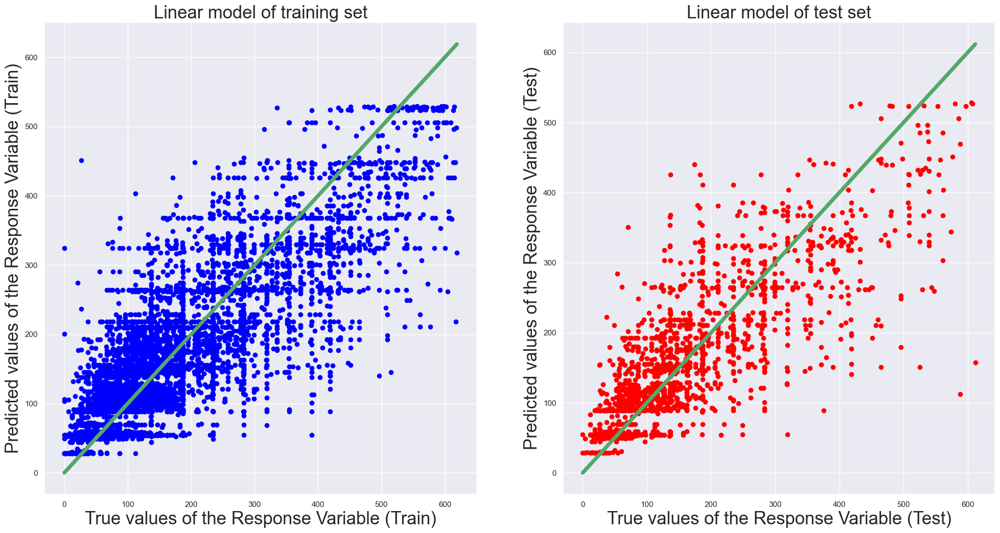

# Basic Libraries
import numpy as np
import pandas as pd
import seaborn as sb
import matplotlib.pyplot as plt # we only need pyplot
sb.set() # set the default Seaborn style for graphics
from sklearn.preprocessing import StandardScaler
from sklearn.model_selection import train_test_split
# Libraries used for Modelling
from sklearn import linear_model
import statsmodels.api as sm
from sklearn.ensemble import RandomForestRegressor
from sklearn import preprocessingdf = pd.read_csv('dataset.csv')
df = df[['room_type','bedrooms','price','reviews','overall_satisfaction', 'accommodates', 'latitude', 'longitude']]
df.head()
le = preprocessing.LabelEncoder()
df = df.apply(le.fit_transform)
df.head()| room_type | bedrooms | price | reviews | overall_satisfaction | accommodates | latitude | longitude | |
|---|---|---|---|---|---|---|---|---|
| 0 | 2 | 1 | 50 | 2 | 0 | 1 | 6249 | 1238 |
| 1 | 2 | 1 | 67 | 0 | 0 | 0 | 333 | 7851 |
| 2 | 2 | 1 | 62 | 0 | 0 | 1 | 7728 | 8104 |
| 3 | 2 | 1 | 57 | 1 | 0 | 2 | 6663 | 2558 |
| 4 | 2 | 1 | 65 | 1 | 0 | 1 | 1892 | 4875 |
# To convert NaN values to 0 for preparation for Modelling
newdf = df.fillna(0)
# Checking to ensure that there are no NULL entries
newdf.isnull().sum()room_type 0
bedrooms 0
price 0
reviews 0
overall_satisfaction 0
accommodates 0
latitude 0
longitude 0
dtype: int64# Separating X and y for Modelling
X = pd.DataFrame(df[["bedrooms", "room_type",'reviews', 'overall_satisfaction','accommodates']]) #Predictor Variable
y = pd.DataFrame(df["price"]) #Response Variable
# Scaling
scaler = StandardScaler()
X = pd.DataFrame(scaler.fit_transform(X), columns=list(X.columns))X_train, X_test, y_train, y_test = train_test_split(X, y, test_size=0.2)# Creating and fitting the model
RF = RandomForestRegressor(n_estimators=2000, max_depth=40,min_samples_split = 50,
max_leaf_nodes = 70,max_features = 5).fit(X_train,y_train)
# Predicting the training and testing sets
trainPredictin_RF = RF.predict(X_train)
testPredictin_RF =RF.predict(X_test)C:\Users\Sherin Saju\AppData\Local\Temp\ipykernel_18992\3469011015.py:2: DataConversionWarning: A column-vector y was passed when a 1d array was expected. Please change the shape of y to (n_samples,), for example using ravel().
RF = RandomForestRegressor(n_estimators=2000, max_depth=40,min_samples_split = 50,# calculating the weight of the features.
importancesRF = RF.feature_importances_
feat_imp1 = pd.DataFrame(importancesRF, columns=['Weight'], index=X_train.columns)
feat_imp1.sort_values('Weight', inplace=True)
feat_imp1| Weight | |
|---|---|
| overall_satisfaction | 0.020847 |
| accommodates | 0.054104 |
| reviews | 0.073770 |
| room_type | 0.121973 |
| bedrooms | 0.729306 |
# plotting importance of features
feat_imp = pd.DataFrame({'importance':RF.feature_importances_})
feat_imp['feature'] = X_train.columns
feat_imp.sort_values(by='importance', ascending=False, inplace=True)
feat_imp.sort_values(by='importance', inplace=True)
feat_imp = feat_imp.set_index('feature', drop=True)
feat_imp.plot.barh(figsize=(8,8))
plt.xlabel('Feature Importance Score')
plt.title('Feature Importance Score Plot')
plt.savefig("Randomforest_variableplot")
plt.show()
# Plot the Predictions vs the True values
f, axes = plt.subplots(1, 2, figsize=(24, 12))
axes[0].scatter(y_train, trainPredictin_RF, color = "blue")
axes[0].plot(y_train, y_train, 'g-', linewidth = 5)
axes[0].set_xlabel("True values of the Response Variable (Train)", fontsize=25)
axes[0].set_ylabel("Predicted values of the Response Variable (Train)", fontsize=25)
axes[0].set_title("Linear model of training set", fontsize=25)
axes[1].scatter(y_test, testPredictin_RF, color = "red")
axes[1].plot(y_test, y_test, 'g-', linewidth = 5)
axes[1].set_xlabel("True values of the Response Variable (Test)", fontsize=25)
axes[1].set_ylabel("Predicted values of the Response Variable (Test)", fontsize=25)
axes[1].set_title("Linear model of test set", fontsize=25)
plt.savefig("Randomforest_ML.png")
# getting r square value.
from sklearn.metrics import r2_score
print("The R square value of the model : ", r2_score(y_test, testPredictin_RF))NameError: name 'y_test' is not defined